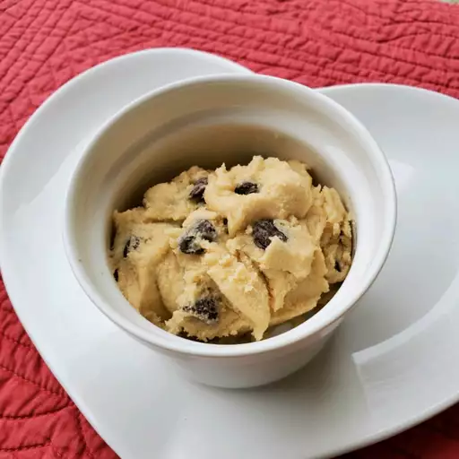

Edible Cookie Dough

Description:
This edible cookie dough is egg-free and will satisfy any cravings for chocolate chip cookies without the wait.
Ingredients:
- 1 cup all-purpose flour
- 3/4 cup packed brown sugar
- 1/2 cup butter
- 1 teaspoon vanilla extract
- 1/2 teaspoon salt
- 2 tablespoons milk
- 1/2 cup milk chocolate chips
- 1/2 cup mini chocolate chips
Directions:
- To heat-treat your flour so it is safe to use: Place flour in a microwave-safe dish and cook for one minute and fifteen seconds, stirring it every fifteen seconds; set aside
- Beat sugar and butter with an electric mixer in a large bowl until creamy. Beat in vanilla extract and salt. Add heat-treated flour; mix until a crumbly dough forms
- Stir in milk until dough is just combines; fold in milk chocolate chips and mini chocolate chips